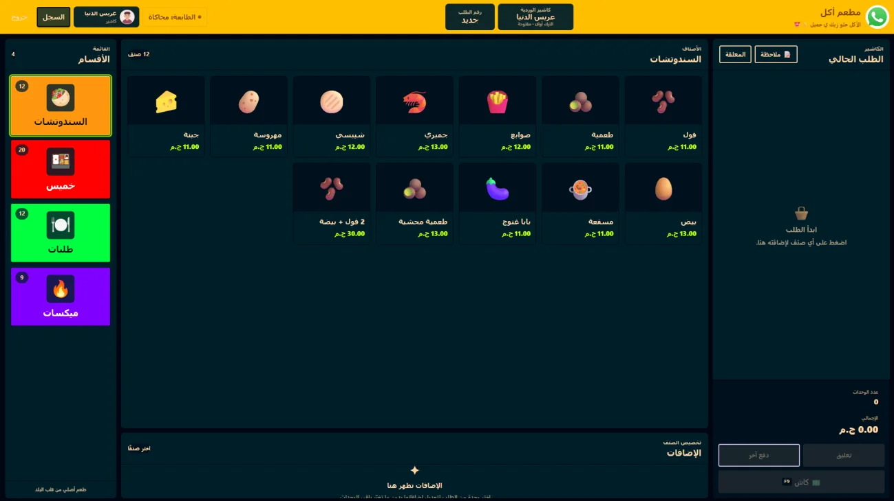

01 / FEATURED SYSTEMLOCAL-FIRST · REAL SCREENS
D4NGER POS.RESTAURANT OPERATIONS / 2026

REAL PRODUCT SCREENSHOTDESIGNED FOR RESTAURANTS
PERSONAL SOFTWARE PROJECT 2026
D4NGER-POS
A restaurant point-of-sale system designed to keep everyday operations moving.
From visual menus and held orders to staff shifts, reliable checkout, receipt printing and reports. A local-first project developed with AI assistance while I build my full-stack knowledge.
View case study Real screenshots · Features · Engineering decisions